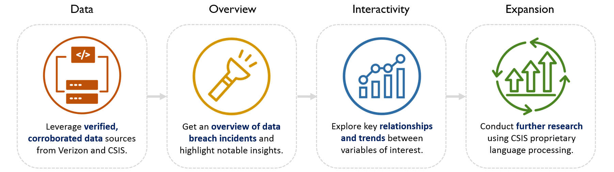
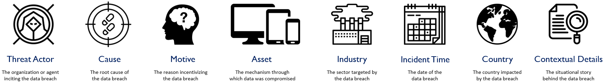

Data Breaches & Cyber Incidents: An Exploratory Analysis
Our mission is to create a data breach dashboard with validated information that promotes insights, discovery, and further research for individuals involved in international relations, information technology, and data fields.
Motivation
Data breaches and related cyberattacks have exposed billions of personal records over the last twenty years. As the volume of compromised data continues to rise, our dashboard aims to communicate the complexity, evolution, and characteristics of the threat landscape through an insightful, interactive, and comprehensive tool.
The Data
Our team used two verified data sources: (1) the VERIS Community Database (VCDB) compiled annually by Verizon and (2) a cyber incident full text document published by the Center for Strategic and International Studies. Proprietary language processing was used to convert the text document into numerically and geopolitically analyzable information.
Your Role
Our dashboard enables you to examine several traits of data breach incidents, from the actors, actions, assets, and motives to industry and temporal trends. Beyond visualizing threat patterns, we encourage you to uncover multivariate relationships and delve into the additional resources and research opportunities showcased below.
Background
Data Sources: VERIS Community Database (VCDB), Cyber Incident Full Text Document from Center for Strategic & International Studies (CSIS)
Target User: Cybersecurity and Geopolitical Professionals
Approach:

Variables & Dataset Features:

Get a quick overview of data breach incidents.
Insert Taeil's force plot.
Navigation Instructions:
- Each bubble on the force plot represents one data breach incident. Hover over each bubble to see the number of records compromised, the country impacted, year, and contextual details.
Explore the global data breach ecosystem using VCDB data from Verizon.
The dashboard below gives you the opportunity to dig deeper into the data to uncover multivariate relationships and temporal trends.
Noteable Insights:
- Incident frequency increased worldwide from 2007 through 2013. The increase correlates with the increase in cyber armament by world powers as reflected by the external research and information on data breaches in 2009-2013.
- When we analyze the cause for the large spike in 2013, we see that once incident accounted for one billion records lost. The next closest resulted in over 65 million records lost. A Yahoo hack accounted for the largest data breach in our records in 2013.
- Overall the average data lost per incident has decreased since 2013, but we are seeing a slight increase starting in 2015. For the United States, the average data lost per incident increases substantially, reaching its highest level in 2018. Though fewer incidents are occurring, greater data loss is accompanying those incidents.
Digging Deeper:
- Let’s look specifically at the WannaCry attack. If the user selects 2018 (the incident occurred in early 2018), and then select health care, the United States, and Malware, the user will find lots of information about WannaCry and incidents that are likely related even if they are not attributed to WannaCry. The user can also use these filters to find information about NotPetya and numerous other incidents.
Navigation Instructions:
- All plots can be used to filter data.
- Click on an attribute of interest (e.g., a country, cause, year, etc.) to uncover further information on the selected category.

Examine data breaches through a geopolitical lens using CSIS data.
To expand and validate our “real world” data, we conducted a key term search to generate data for analysis on a full text information. This can be used on any searchable full text information, however, we chose to use the highly reputable Center for Strategic and International Studies Cyber Incident information. For the analysts, we included the code and data we used in the links section in our website. This data covers much of the same information as our DBIR dashboard in a more digestible format for Geopolitical Analysts. The analysis focuses on quickly deriving information from one source instead of reading through it line by line. This parsing can be paired with other data, as we have done here, to derive alternative insights.
Notable Insights:
- Generally the assets used increases over time. This reflects an increasing trend of strategically relevant cyber incidents. Some countries are more impacted than others. Try comparing the United States and Russia asset trends to China.
Potential Bias:
- The CSIS focuses on the US. Likely the most relevant and accurate data is for the U.S. on this visualization. The analyst also oriented the organizations involved based on the U.S.
Navigation Instructions:
- All plots can be used to filter the data, including the Assets Key.
- Select a Country, Asset and/or Organization of interest and start exploring the Center for Strategic and International Studies Data!